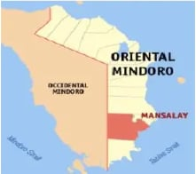

Life Among Hanunuo Mangyan
An immersive digital museum of Indigenous culture where ancestral stories, ceremonial art, and modern resilience blend into a cinematic, glowing experience.
Introduction
The Hanunuo Mangyan are one of the eight indigenous Mangyan groups living in the island of Mindoro. Known for their rich cultural heritage, they are recognized for preserving traditional practices, language, and writing systems despite the influence of modernization. The Hanunuo Mangyans mainly reside in the southern part of Mindoro, where they depend on agriculture, weaving, and forest resources for their livelihood. Their way of life reflects a deep connection with nature, emphasizing simplicity, cooperation, and respect for the environment.
One of the most remarkable aspects of the Hanunuo Mangyan culture is their ancient script called Surat Mangyan, a traditional writing system used for poetry, songs, and communication. They are also known for their practices in agroforestry, particularly kaingin or swidden farming, which has long been part of their sustainable living. Through their customs, beliefs, and indigenous knowledge, the Hanunuo Mangyans continue to contribute to the cultural diversity and history of the Philippines.

A luminous timeline of origin, migration, resistance, and the evolving demography that defines Indigenous history.
Origin
Mangyan people The name “Mangyan” refers to a certain group or groups of ethnic Filipinos, who are predominantly inhabiting the interior areas of the Island of Mindoro.Various reports, however, indicate them to have been present in Tablas, Romblon and Sibuyan Islands, east of Mindoro, as well as in Palawan, Negros and Albay. Among the Mangyans of Mindoro themselves, the name Mangyan, like among the Alangan or Iraya, simply means: man, woman, person, or human being, without reference to any tribe or nation. As to Mangyan as a tribal name, this is claimed specifically by the ethnic group in Mansalay and Bulalacao municipalities. And if they want to stress the point, they might say: “Kami hanunuo Mangyan,” or in Tagalog: “Kami’y tutuong Mangyan,” because “hanunuo,” from the root word “tuo,” is an adjective meaning: true, real. To call these Mangyan just “Hanunuo,” would not make sense to them without adding a substantive.
Migrations
Inland Retreat: Originally coastal dwellers, the Hanunuo migrated inland to the mountains to avoid the influx of Spanish settlers, religious conversion, and Moro slave raids. Modern Pressures: More recently, they have faced displacement from ancestral domains due to land grabbing, deforestation, and private pasture leases. Labor Migration: In recent decades, younger Hanunuo members have increasingly migrated out of their communities to lowlands for work, a shift that threatens close-knit kinship ties and traditional subsistence farming.
Colonization & Resistance
The Hanunuo are one of the Indigenous Mangyan groups of Mindoro in the Philippines. Before colonization, they lived in coastal and lowland areas where they practiced farming, trade, hunting, and maintained their own culture and writing system called Surat Mangyan. During the Spanish colonization in the 16th century, many Mangyan groups, including the Hanunuo, resisted foreign control, forced Christianization, and settlement expansion. Instead of fully submitting to colonial rule, they moved deeper into the mountains and forest interiors of Mindoro to protect their traditions, land, and identity.
Demography
Originally coastal dwellers, the Hanunuo migrated inland to the mountains to avoid the influx of Spanish settlers, religious conversion, and Moro slave raids. More recently, they have faced displacement from ancestral domains due to land grabbing, deforestation, and private pasture leases. In recent decades, younger Hanunuo members have increasingly migrated out of their communities to lowlands for work, a shift that threatens close-knit kinship ties and traditional subsistence farming.


The history of the Hanunuo Mangyan reflects a long journey of resilience, identity, and adaptation shaped by both their environment and outside influences. From their early existence in coastal and lowland areas, they gradually migrated into the mountainous interior of Mindoro as a way to protect their culture, traditions, and way of life from colonization, religious conversion, and external control. This movement was not just physical relocation but also a cultural effort to preserve their language, beliefs, and their ancient writing system despite constant pressures from outside forces. Over time, their history became closely tied to resistance and survival. During the Spanish colonization, the Hanunuo chose to retreat further into the forests rather than fully submit to foreign rule, allowing them to safeguard their customs and identity. Even in more recent times, they continue to face challenges such as land grabbing, deforestation, and loss of ancestral domains, which affect their traditional way of life and connection to the land. Today, their demographic situation is also changing, as younger members increasingly migrate to lowland areas in search of work, which weakens traditional kinship ties and subsistence farming practices. Despite these struggles, the Hanunuo Mangyan remain resilient, continuing to preserve their cultural heritage while adapting to modern pressures, showing that their history is not only one of survival but also of enduring strength and continuity.
Political systems blend customary law, administration, and modern governance to honor sovereignty and cultural rights.
Political Systems
The Hanunoo Mangyan community is known for having a peaceful and equal society. They do not have chiefs, servants, or formally recognized rulers. Instead, members of the community treat one another with respect and equality. One important figure in their society is the panudlakan, a spiritual leader who performs special tasks and guides the community in cultural and religious practices. Peace and order are maintained through understanding and cooperation among community members. The Hanunoo Mangyan people are generally peaceful, and conflicts are usually settled through discussions led by elders. Their goal is to achieve reconciliation between both sides instead of punishment. Small fines may also be given, which are accepted and understood within their traditional customs.
Administration
The Hanunuo Mangyan have a simple and community-based political administration rooted in their traditional customs and kinship system. Their society does not follow a strict hierarchical form of government like modern political systems. Instead, leadership is usually informal, with respected elders and community leaders guiding decision-making, settling conflicts, and maintaining peace within the group. These elders are valued for their wisdom, experience, and knowledge of traditions. Decisions in the community are often made through discussion and mutual agreement rather than through formal laws or authority.
Rules & Regulations
The Hanunuo Mangyan people of southern Mindoro follow unwritten customs and traditions instead of written laws. Their society is guided by cooperation, respect, and moral values passed down by elders through generations. Community practices help regulate justice, marriage, sharing, and the peaceful settlement of conflicts. One important traditional practice is the kasaba, a form of trial by ordeal used for serious accusations such as theft or adultery, where a suspect may place their hand in boiling water to prove innocence or guilt. If found guilty, the person may be asked to pay fines or prepare a communal feast as a way of restoring peace and harmony within the community.
Customary Law
The Hanunuo Mangyans follow customary laws based on tradition, respect, and community values. These laws are not written formally but are passed down through generations and guide behavior, conflict resolution, marriage, land use, and relationships within the community. Elders play an important role in interpreting these customs and helping settle disputes through discussion, advice, and mutual agreement rather than punishment. Their customary laws focus more on restoring harmony and maintaining peaceful relationships among families and clans. In the modern era, a political system is evident among the Hanunuo Mangyans through the influence of the Philippine government and local governance structures. Many communities now interact with barangay officials, local government units, and Indigenous Peoples organizations recognized under the National Commission on Indigenous Peoples. Some Hanunuo leaders also represent their communities in consultations, ancestral land concerns, and development programs. Even with these modern political influences, traditional leadership and customary laws still remain important in guiding community life and preserving their cultural identity.
The political life of the Hanunuo Mangyan is rooted in equality, cooperation, and respect, where there are no formal rulers, chiefs, or rigid hierarchies, and leadership is instead guided by respected elders and spiritual figures like the panudlakan who help maintain cultural and religious practices. Community decisions are generally made through open discussion and mutual agreement, and conflicts are resolved peacefully through dialogue rather than punishment, often with reconciliation as the main goal. Their political system is simple but effective, focusing on maintaining harmony within the community rather than exercising authority or control. Their administration and rules are based on customary laws that are not written but passed down through generations, shaping behavior, relationships, marriage, land use, and conflict resolution. Elders play a key role in interpreting these traditions and ensuring that peace is maintained, sometimes using practices like kasaba, a traditional trial by ordeal used for serious accusations, followed by fines or communal acts to restore balance. In modern times, they also interact with the Philippine government, barangay officials, and Indigenous organizations, which has introduced new forms of governance and representation. Despite these external influences, their customary laws and traditional leadership remain central in preserving their identity and guiding their way of life.
An economic landscape shaped by ancestral land, trade, craftsmanship, and the exchange of ideas.
Source of Living
The Hanunuo Mangyan people traditionally practice swidden (slash-and-burn) agriculture, cultivating upland rice, corn, sweet potatoes, taro, and other root crops as their main source of food. They also supplement their livelihood through foraging, hunting, and raising livestock, while some communities engage in small-scale trade by selling surplus crops and forest products such as bananas and ginger to lowlanders. In recent times, many farmers have started using commercial fertilizers and attending government-led agricultural seminars, where they learn modern farming techniques. Despite these changes, they continue to maintain their traditional planting practices alongside newer methods to improve harvests. In fishing communities, Hanunuo Mangyans who live near coastal areas traditionally used simple tools like spears and bows and arrows, but today many have shifted to using boats, including motorized ones, often influenced by neighboring Bisayan and Tagalog communities. Hunting, once more common in forested areas, has become less frequent due to the decline of wildlife and environmental protection laws such as the Wildlife Resources Conservation and Protection Act. Overall, while modernization and outside influences have introduced new tools and practices in farming, fishing, and hunting, the Hanunuo Mangyans continue to balance these changes with their traditional way of life.
Trade
The Hanunuo Mangyan are animists who believe that nature such as mountains, rivers, and rocks are inhabited by guardian spirits called "kalag". Their agricultural is deeply connected to spiritual practices, and rituals like the "bugkos" rice ceremony are performed during planting and harvest seasons, accompanied by prayers and offerings to maintain harmony between people, nature, and the spirit world. Their communities are traditionally located in the mountainous uplands of southern Mindoro, where they established their ancestral settlements long before modern land classification systems. These areas are part of their ancestral domain, where land is collectively shared and used based on customary practices rather than formal ownership titles or strict land divisions. However, today their connection to these ancestral lands faces challenges from modern development, land grabbing, and climate change. While state policies often classify these areas as public land, indigenous advocacy groups continue working to secure land rights and protect their ancestral domain through sustainable and culturally respectful stewardship.
Goods & Services
Among the Hanunuo Mangyan, trade in goods and services is mostly local and based on basic needs. They exchange surplus agricultural products such as upland rice, root crops, bananas, and ginger with lowland communities. In return, they receive essential goods like clothing, tools, and other household items that are not commonly produced within their mountainous settlements. This simple trading system helps them support their daily livelihood while maintaining their subsistence way of life. In terms of wider economic interaction, the Hanunuo Mangyan have limited participation in larger or international trade, but they are indirectly connected through lowland markets where their products are sold. Their economy remains largely traditional and community-based, focusing on self-sufficiency rather than large-scale commercial exchange. However, growing contact with nearby towns has gradually introduced them to broader market systems, influencing how they produce and sell their goods.
Technology & Ideas
Among the Hanunuo Mangyan, the transfer of technology and ideas happens mainly through interaction with elders, neighboring communities, and exposure to lowland Filipino society. Traditionally, knowledge such as farming methods, weaving, writing scripts, and cultural practices is passed down orally and through observation. Elders play a key role in teaching younger generations, ensuring that traditional skills and values are preserved. In recent times, new technologies and ideas have also been introduced through contact with government programs, education, and neighboring groups. These include modern farming techniques, tools, communication devices, and basic livelihood innovations. While these changes improve efficiency and access to resources, the Hanunuo Mangyan continue to balance modernization with the preservation of their traditional knowledge and cultural identity.


Social structure, identity, and environmental guardianship are central to Indigenous life and modern challenges.
Relationship to Land
The relationship between the Hanunóo Mangyan people and their land is profound, spiritually rooted, and holistic. For the Hanunóo, land is life. It goes far beyond a physical location; it is the cornerstone of their cultural identity, sustenance, and generational survival. The Hanunóo, based primarily in the mountains of southern Mindoro, rely on a highly specialized, sustainable form of swidden agriculture (locally called kaingin). Rather than destroying the forest, they skillfully rotate crops and practice fallow periods, ensuring the land remains fertile.
Social Identity
The relationship between the Hanunóo Mangyan people and their land is profound, spiritually rooted, and holistic. For the Hanunóo, land is life. It goes far beyond a physical location; it is the cornerstone of their cultural identity, sustenance, and generational survival. The Hanunóo, based primarily in the mountains of southern Mindoro, rely on a highly specialized, sustainable form of swidden agriculture (locally called kaingin). Rather than destroying the forest, they skillfully rotate crops and practice fallow periods, ensuring the land remains fertile.
Environmental Preservation
The Hanunuo Mangyans practice three main agroforestry systems: swidden or kaingin farming, multistorey farming, and home gardens. Among these, kaingin farming is the most commonly practiced and plays an important role in supporting their livelihood and environment. Traditional farming practices and sustainability were examined through soil analyses, interviews, and other methods. Kaingin farms are commonly planted with rice, corn, banana, cassava, ube, and kadios, creating a multiple cropping system that provides different food sources. Farmers also allow the land to rest for one to three years before planting again. These practices help the Hanunuo Mangyans maintain their food supply while preserving their traditional agricultural knowledge.
Social Structure
The Hanunuo (or Hanunó'o) are an indigenous Mangyan people from Mindoro Island, Philippines, renowned for preserving their pre-colonial syllabic script and traditional poetry. Their society is egalitarian and kinship-based, functioning without strict hierarchical leadership. Instead of rigid laws, social order and conflict resolution are guided by community consensus and the wisdom of village elders.
Modern Issues
As generations continue to change, the Hanunuo Mangyan community has also experienced the effects of modernization in many parts of daily life. Hanunuo millennials today are more exposed to technology, social media, and modern lifestyles compared to the older generation. Changes can be seen in the way they communicate, their views on marriage, and even their political beliefs. While these modern influences continue to shape the younger generation, the values and traditions taught by their elders still remain an important part of their identity. Even with the fast-changing world, many Hanunuo millennials continue to protect and preserve their culture. Younger members of the community are still being taught their traditions, language, and customs through local learning centers and community guidance. Modern technology may have introduced a new way of living, but it has not completely erased their cultural roots. Instead, many Hanunuo people continue to balance tradition and modernization, showing that cultural identity can still survive and grow in today’s modern society.